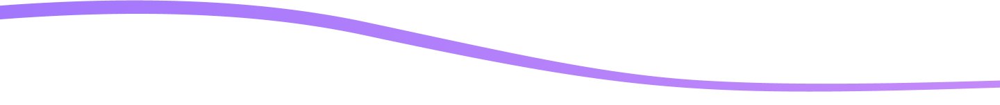
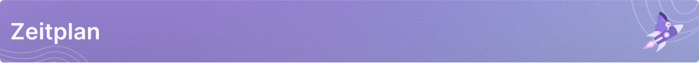
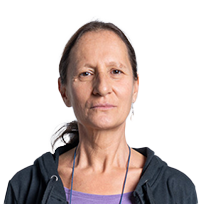
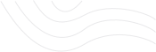

Willkommen beim Quanten-Neuro-Interaktions Kongress!
Tauchen Sie ein in die faszinierende Welt der Künstlichen
Intelligenz und erkunden Sie unser innovatives Projekt, das die
Grenzen der Realität verschwimmen lässt.
Der Kongress startet in:
Tausende von Neurologen in Unternehmen vertrauen darauf

Zeitplan
Tauchen Sie in den vielfältigen Zeitplan ein, der spannende
Diskussionen, Panels und interaktive Sessions umfasst. Entdecken
Sie, wann unsere Experten über Quanten-Neuro-Interaktion
diskutieren werden.

FREITAG
SAMSTAG
Prof. Dr. Christof Spies
09:00 - 10:00
Maximilian Schmidt
09:00 - 10:00
Liam Hawthorne, Mia Delaney
10:15 - 12:15
Dr. Hannah Müller
10:15 - 12:15
Lukas Wagner, Ava Harrington
13:00 - 14:00
Sophia Becker, Oliv Wrenwood
13:00 - 14:00
Dr. Ethan Mercer
14:15 - 15:15
Caleb Ashford, Gabriel Sinclair
14:15 - 15:15
Lily Abernathy, Lucas Whitman
15:45 - 17:00
Ema Backwell, Oliver Kingsley
15:45 - 17:00
Bekannte Referenten
und Teilnehmer
Treffen Sie die Köpfe hinter den Diskussionen. Lernen Sie
unsere virtuellen Experten kennen und erfahren Sie mehr über
ihre fiktiven Hintergründe. Obwohl sie Kreationen der KI
sind, werden sie dennoch Ihr Denken anregen und zum
Nachdenken über zukünftige Möglichkeiten anregen.
Keynote
Physik wird medizinischer
Prof. Dr. Christof Spies
Leitender Mediziner
MedBio Innovations
Keynote
Neue Möglichkeiten durch QNI
Dr. Hannah Müller
Vorsitzende Forscherin
Stiftung für Wissenschaft und Medizin
Keynote
Unsere Fucking Zukunft: warum wir für den Wandel
rebellieren müssen
Lukas Wagner
Zukunftsforscher
Zukunftsinstitut
Keynote
Kommunikation im Zeitalter der ChatBots
Maximilian Schmidt
Unabhängiger Philosoph | Research Director
Soren Ethos
Liam Hawthorne
Live-Kommentator und Moderator
SWR
Ava Harrington
Director Communications
Zalando
Dr. Ethan Mercer
Communication Expert
Volkswagen Group Academy
Sophia Becker
Head of Group Communications
ProSiebenSat.1 Media
Mia Delaney
Erste Stellvertretende Sprecherin und erste
Stellvertretende Leiterin des Presse- und
Informationsamtes
Bundesregierung

Gabriel Sinclair
Trendscout Future of Work Life & Learn
Vitra
Oliv Wrenwood
Head of Group Communications
Roche
Caleb Ashford
Leiter Kommunikation und Marketing
Komische Oper, Berlin
Emily Anderson
Softwareentwicklerin
TechnoTech Solutions
Alexander Müller
Grafikdesigner
PixelPerfect Design Studio
Sarah Schneider
Marketingmanagerin
Stellar Marketing Agency
Olivia Davis
Krankenschwester
City General Hospital
Jonathan Clark
Finanzanalyst
Capital Investments, Inc.
David Wilson
Umweltberater
EcoSustain Consultants, LLC
Talks über QNI
QNI erforscht die potenzielle Verbindung zwischen
Quantenphänomenen und Gehirnfunktion, mit Auswirkungen auf
Bewusstsein, Medizin, Technologie und Ethik.
Tatsächlich gibt es in der Forschungsgemeinschaft regelmäßig
Konferenzen und Kongresse, die sich auf QNI konzentrieren.
Bei diesen Veranstaltungen kommen führende Experten aus
verschiedenen Disziplinen zusammen, um ihre neuesten
Erkenntnisse, Ideen und Entwicklungen in diesem
aufstrebenden Bereich auszutauschen. Diese Konferenzen
bieten eine Plattform für den interdisziplinären Austausch
und fördern die Zusammenarbeit zwischen Wissenschaftlern,
Technologen und Ethikern, um die vielfältigen Aspekte der
QNI zu erforschen und zu diskutieren. Die Diskussionen und
Erkenntnisse, die auf solchen Konferenzen entstehen, tragen
dazu bei, die QNI-Forschung weiter voranzutreiben und ihr
Potenzial voll auszuschöpfen.
2015 - 2017
Die Synergie von Gehirn und Quantenwelt
QNI erforscht die potenzielle Verbindung zwischen
quantenphysikalischen Phänomenen und neuronaler Aktivität im
Gehirn.
Die Synergie von Gehirn und Quantenwelt, erforscht durch die
Quanten-Neurowissenschaftliche Untersuchungen (QNI), öffnet
ein faszinierendes Forschungsfeld, das die potenzielle
Verbindung zwischen quantenphysikalischen Phänomenen und
neuronaler Aktivität im Gehirn näher beleuchtet. Diese
interdisziplinäre Forschung könnte nicht nur bahnbrechende
Erkenntnisse über die Funktionsweise des Gehirns und deren
Beziehung zu den Grundlagen der Quantenphysik liefern,
sondern auch neue Perspektiven für die Entwicklung von
medizinischen Therapien, fortschrittlichen Technologien und
ethischen Richtlinien eröffnen. Die Erkenntnisse aus der QNI
könnten somit sowohl unser Verständnis des Bewusstseins als
auch die Art und Weise, wie wir mit den komplexen
Herausforderungen des 21. Jahrhunderts umgehen, maßgeblich
beeinflussen.
2018
QNI und Bewusstsein
Die Quantum Neuro Interaktion erforscht die Möglichkeit,
dass Quanteneffekte im Gehirn eine zentrale Rolle bei der
Entstehung des Bewusstseins spielen könnten.
Dieses aufstrebende Forschungsfeld verbindet die
faszinierende Welt der Quantenphysik mit der komplexen
Funktionsweise unseres Gehirns, um grundlegende Fragen zur
Natur des Bewusstseins zu beantworten. Die Erkenntnisse aus
der QNI könnten nicht nur unser Verständnis des Bewusstseins
vertiefen, sondern auch die Tür zu innovativen medizinischen
Ansätzen, technologischen Entwicklungen und ethischen
Diskussionen weit öffnen. Die Verbindung zwischen
Quantenphänomenen und Bewusstsein verspricht, unsere
Vorstellung von der menschlichen Natur auf eine neue Ebene
zu heben und neue Horizonte für die Forschung zu eröffnen.
2018 - 2020
Neue Ansätze für die Neurologie und Psychiatrie
QNI könnte zu innovativen Ansätzen in der medizinischen
Forschung für Neurologie und Psychiatrie führen.
QNI hat das Potenzial, die medizinische Forschung in den
Bereichen Neurologie und Psychiatrie zu revolutionieren. Die
Erforschung der Verbindung zwischen Quanteneffekten und
Gehirnfunktion könnte zu maßgeschneiderten Therapieansätzen
für neurologische und psychische Erkrankungen führen,
wodurch die Lebensqualität der Betroffenen erheblich
verbessert werden könnte. Dies verspricht bahnbrechende
Entwicklungen in der Medizin.
2021 - 2022
Quantencomputing und Künstliche Intelligenz
QNI könnte einen Weg zu neuartigen Technologien wie
Quantencomputing und Künstlicher Intelligenz ebnen.
Die Verbindung zwischen Quantenphänomenen und der
Funktionsweise des Gehirns verspricht leistungsstärkere
Rechenmaschinen und fortschrittliche intelligente Systeme zu
schaffen, die in verschiedenen Bereichen transformative
Auswirkungen haben könnten.
2023
Herausforderungen und Chancen
QNI wirft ethische Fragen auf, während sie auch neue Wege
für das Verständnis des menschlichen Geistes eröffnet.
Diese interdisziplinäre Disziplin eröffnet potenziell
bahnbrechende Einsichten in die Natur des Bewusstseins und
wie unser Gehirn funktioniert. Gleichzeitig erfordert sie
jedoch eine sorgfältige Auseinandersetzung mit Fragen der
Privatsphäre, der ethischen Verantwortung und der möglichen
Auswirkungen auf die Gesellschaft. Die Chancen und
Herausforderungen, die QNI bietet, machen sie zu einem
spannenden, aber auch verantwortungsvollen Forschungsfeld.
Schließen Sie sich zehntausenden von Entwicklern an, die mit Xata
arbeiten, um bessere Produkte zu entwickeln.

Max Weber
@CuriousMax
Physikstudent
Faszinierende Diskussionen auf dem
#QNIKongress! Hier treffen
Quantenverschränkung und Gehirnwellen aufeinander - wer
hätte gedacht, dass sie so viel gemeinsam haben? 🌌🤯
#Innovation
Dr. Sarah Müller
@QuantumSarah
Neurowissenschaftlerin
Gerade beim
#QuantenNeuroKongress gewesen
und mein Verstand ist förmlich explodiert! Die Verbindung
von Quantenphysik und Neurologie ist wirklich atemberaubend.
🧠🔮
#ZukunftsweisendeWissenschaft
Emily Schneider
@EmilyQuantum
Wissenschaftsjournalistin
Die Teilnahme am Kongress für Quanten-Neuro-Interaktion war
eine unglaubliche Erfahrung. Es ist erstaunlich, die Zukunft
der Wissenschaft direkt vor unseren Augen zu erleben.
#NeuroQuantum
Dr. David Wagner
@QuantumMindset
Quantenphysiker
Die Schnittstelle zwischen Quantenmechanik und neuronalen
Netzwerken war noch nie so aufregend! 🌟 Ich liebe die
Erkenntnisse und Diskussionen auf dem
#QuantenNeuroKongress #NextGenForschung
Anna Müller
@AnnaNeuroQ
Studentin der Neurowissenschaften
Beim
#QuantenNeuroKongress
beeindruckt von der Möglichkeit, wie Quantenmechanik unser
Verständnis des Gehirns erweitert. Eine aufregende Zeit für
die Wissenschaft! 🧠🔬
#NeueHorizonte
Dr. Thomas Becker
@QuantumBrainDoc
Neurologe
Erstaunt über die Verbindung von Quantenphänomenen und
Gehirnfunktionen auf dem
#QNIKongress. Eine aufregende
Ära der Forschung hat begonnen! 🌌🧠
#FrontiersOfScience
Lara Schmidt
@Lara_Quantum
Technologie-Enthusiastin
Teilnahme am
#QuantenNeuroKongress hat mich
wirklich zum Nachdenken gebracht. Die Verschmelzung von
Quantenwelt und Gehirnaktivität ist faszinierend! 💡🌟
#ScienceExploration
Dr. Felix Klein
@FelixQMind
Forscher in Quanteninformatik
Die Zukunft ist hier! Am
#QuantenNeuroKongress erstaunt
über die Möglichkeiten, wie Quantenphänomene das Verständnis
unserer Gedanken und Gehirne revolutionieren. 🚀🧠
#QuantumRevolution
Julia Richter
@JuliaMindWave
Neuropsychologin
Der #QNIKongress hat gezeigt,
wie die Kombination von Quantenphysik und
Neurowissenschaften zu aufregenden neuen Erkenntnissen
führen kann. Spannende Zeiten! 🌌🔬
#WissenschaftEntdecken
Dr. Alex Schneider
@NeuroQuantumAlex
Forscher für Neuro-Quantenphänomene
Am
#QuantenNeuroKongress
diskutieren wir das Unmögliche. Quantenphysik und
Neuroneninteraktion - ein bemerkenswerter Schritt in der
Forschung. 🌠🧠
#WissenschaftErforschen
Lisa Wagner
@LisaQuantumMind
Science-Fiction-Autorin
Es ist fast surreal, wie die Realität die Fiktion auf dem
#QuantenNeuroKongress
überholt. Das Potenzial der Quanten-Neuro-Interaktion ist
ein wahres Abenteuer der Wissenschaft! 🚀📚
#ScienceFictionRealität
Dr. Niklas Müller
@QuantumNeuroNik
Bioinformatiker
Beim #QNIKongress werden
Grenzen zwischen Disziplinen verschwommen. Die Verbindung
von Quantenphysik und Neurologie eröffnet neue Perspektiven.
🌌🧠
#InterdisziplinäreForschung
Sophia Weber
@SophiaQInteract
AI-Entwicklerin
Fasziniert von den Möglichkeiten der
Quanten-Neuro-Interaktion auf dem
#QuantenNeuroKongress. KI und
Gehirn - eine Symbiose, die unsere Zukunft gestaltet! 🌐🧠
#AIInnovation
Dr. Jonas Klein
@JonasNeuroQuant
Neurowissenschaftler
Am #QNIKongress erkenne ich,
wie Quantenphänomene unser Verständnis des Gehirns
erweitern. Eine faszinierende Reise in die Welt der
Wissenschaft! 🌌🔬
#GehirnErforschen
Maria Richter
@MariaQuantumMind
Studentin der Quantenphysik
Der #QuantenNeuroKongress hat
mir die Augen für die aufregenden Verbindungen zwischen
Quantenwelt und Gehirnfunktionen geöffnet. Eine
inspirierende Erfahrung! 🌟🧠
#WissenschaftEntdecken